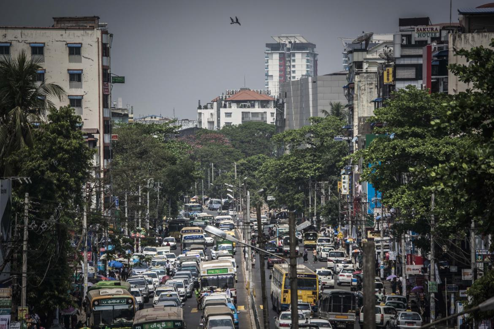
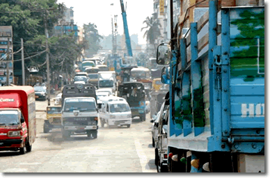
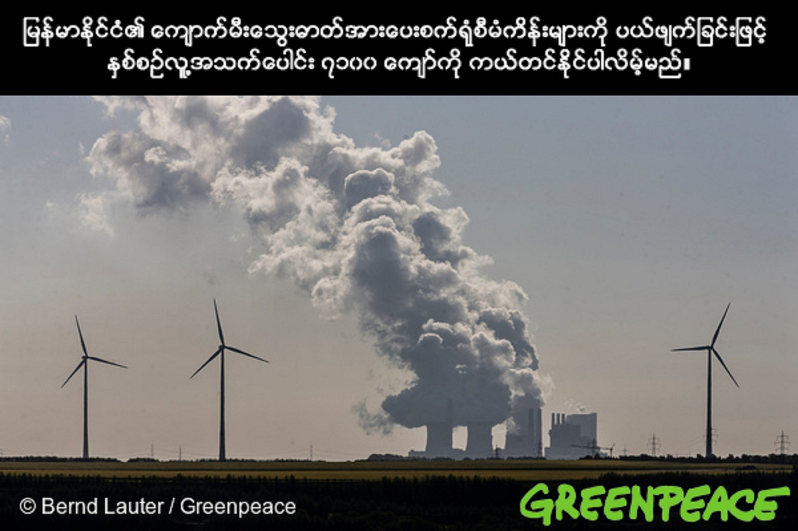
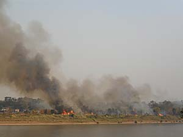
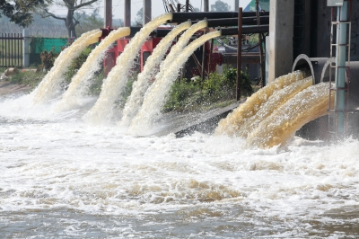
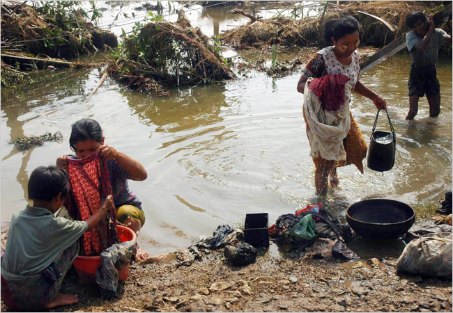
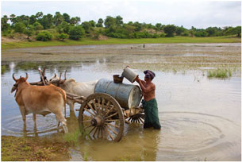
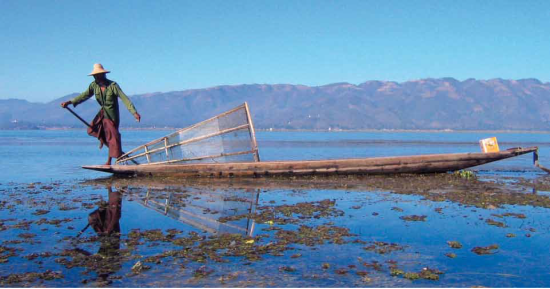
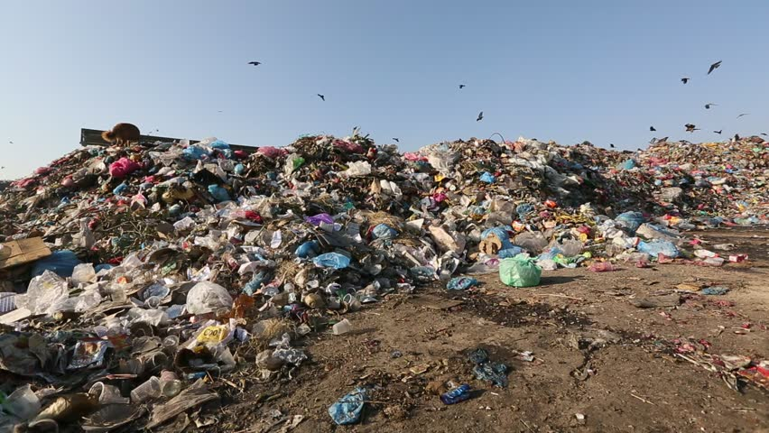
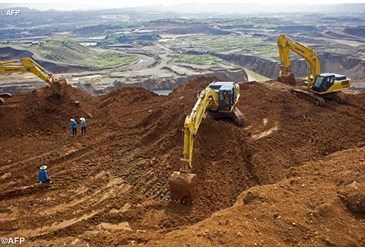

| Air Pollution | |
| Drinking Water Pollution and Inaccessibility | |
| Dissatisfaction with Garbage Disposall | |
| Dirty and Untidy | |
| Noise and Light Pollution | |
| Water Pollution | |
| Dissatisfaction to Spend time in the City | |
| Dissatisfaction with Green and Parks in the City | |
|  |  |  |  |
Concerns are growing in air pollution.However,levels of sulfur dioxide and nitrogen dioxide were below WHO standards, said Dr Kyi Lwin Oo of the Ministry of Health's Occupatinal Health Department.The WHO's most detailed data set ever on outdoor air quaility found that few if any locations in this country have completely safe air to breathe.
A spokesperson for the WHO Myanmar office said the main source of outdoor air pollution in Myanmar include "ineffecient modes of transport,inefficient combustin of household fuels for cooking,lighting and heating,coal-fired power plants,industrial agriculture and waste bruning."WHO Myanmar representive Dr Jarge Luna specially blamed indoor and outdoor air pollutin-including exposure to second-hand tobacco smoke-as major factors causing no-communicable diseases such as stroke,heart disease, cancers and chronic respiratory disease.
Myanmar is a country rich in water resources.Industrial zone waste shows rising pollution.The level of organic pollutants in waste water at the Hlaing Tharyar and Shwe Pyi Thar industrial zones was higher that standard specifications, according to research from the Green Motherland Development Association.Water supply management in Myanmar is the responsibility of the respective local government.Most cities and towns in Myanmar can provide water supply for domestic use but the water quality is not up to drinking water quality standard.There is a need to improve the water supply pipe networks, maintenance and technology.There is a need for public education and participation to reduce water wastage.
|  |  |  |  |
Soil PollutionIn Myanmar.soil pollution is one of the most serious problems, and government cannot be controlled until now, so the agricultural products of Myanmar are falling.The fertility of the soil will reduce if the surface soil is reided, and it can turn aargicultural land into desert land.To prevent soil erosion,Myanmar should preserve forests and grasslands. If soil erosion cannot be proserved,it will lead to flooding.Weather and agricultural experts argue that they get 4 inches of rain from the flood areas, but flooding problems never happen with this amount of rainfall in the past. Not only nutrient depletion but also ecological,social and economic problem can be happened because of soil pollution. |
  |